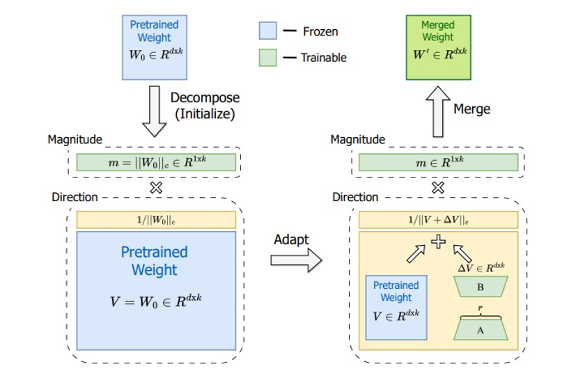
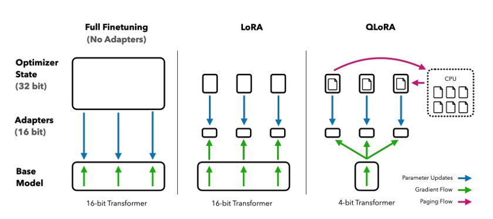

Week 3: Efficient Fine-Tuning with Modern PEFT Techniques#
1. The Need for Parameter-Efficient Fine-Tuning (PEFT)#
The emergence of large language models (LLMs) has necessitated a new paradigm for fine-tuning. Fully fine-tuning models like GPT-3, BERT, or LLaMA with billions of parameters presents fundamental challenges:
Memory Explosion: A 7B parameter model alone requires ~28GB GPU memory, with actual requirements exceeding 40GB when considering gradients and optimizer states
Computational Cost: Updating billions of parameters consumes enormous computational resources and time
Overfitting Risk: Limited training data can lead to catastrophic forgetting of pre-trained knowledge
Storage Overhead: Storing entire models for each task becomes impractical for deployment and management
Parameter-Efficient Fine-Tuning (PEFT) solves these problems by training only a small portion of the model. The core insight is that “weight updates lie in a low-dimensional subspace”. Instead of exploring the entire parameter space, we find effective update directions.
Core Benefits of PEFT#
Memory Efficiency: Train 65B parameter models on a single 48GB GPU
Fast Convergence: Achieve 10x faster training with fewer parameters
Better Generalization: Constrained updates prevent overfitting and ensure stable performance
Modularity: Small adapters can be easily stored, shared, and swapped
Inference Efficiency: Merge adapters into base weights to eliminate overhead
This lecture explores cutting-edge PEFT techniques: LoRA, DoRA, WaveFT, VB-LoRA, QR-Adaptor, and QLoRA. These methods redefine efficiency boundaries, enabling researchers and practitioners to achieve maximum performance with minimal resources.
2. LoRA: The Foundation of Low-Rank Adaptation#
LoRA (Low-Rank Adaptation) has become the foundation and standard of PEFT techniques. Proposed by Microsoft in 2021, LoRA is based on the key insight that “weight updates lie in a low-dimensional subspace”, achieving efficiency through low-rank matrix decomposition instead of updating all parameters.
2.1 Core Principles of LoRA#
Instead of directly updating the full weight matrix \(W_0 \in \mathbb{R}^{d \times k}\), LoRA decomposes the update through low-rank factorization:
where:
\(A \in \mathbb{R}^{d \times r}\) and \(B \in \mathbb{R}^{r \times k}\) are low-rank matrices
\(r \ll \min(d, k)\) is the rank (typically 4, 8, 16)
Only \(A\) and \(B\) are trainable parameters
The final weight becomes: \(W = W_0 + \Delta W = W_0 + AB\)
2.2 Mathematical Example of LoRA#
For a 768×768 attention weight matrix with rank \(r=8\):
Full fine-tuning: 768² = 589,824 parameters
LoRA: 8×(768+768) = 12,288 parameters (98% reduction!)
This dramatic parameter reduction reduces memory usage by 90%+ while minimizing performance loss.
2.3 LoRA Implementation Example#
import torch
import torch.nn as nn
from peft import LoraConfig, get_peft_model
# Apply LoRA to Korean BERT model
model_name = "klue/bert-base"
model = AutoModelForSequenceClassification.from_pretrained(
model_name,
num_labels=2,
torch_dtype=torch.float16
)
# LoRA configuration
lora_config = LoraConfig(
task_type=TaskType.SEQ_CLS,
r=8, # LoRA rank
lora_alpha=32, # Scaling factor
target_modules=["query", "value", "key", "dense"], # Target layers
lora_dropout=0.1,
bias="none"
)
# Apply LoRA to model
model = get_peft_model(model, lora_config)
print(f"Trainable parameters: {model.print_trainable_parameters()}")
Example Output:
trainable params: 1,572,864 || all params: 110,104,322 || trainable%: 1.43
2.4 Key Advantages and Limitations of LoRA#
Advantages:
Parameter Efficiency: Uses only 0.1%-0.5% of original parameters
Memory Savings: 90%+ reduction in memory usage
No Inference Overhead: Adapters can be merged into base weights
Modularity: Task-specific adapters can be easily swapped
Limitations:
Low-rank Bottleneck: Rank constraints may limit expressiveness
Hyperparameter Sensitivity: Performance varies with rank and alpha values
Lack of Layer-wise Optimization: Same settings applied to all layers
Checkpoint Questions#
Why does LoRA constrain weight updates to a low-dimensional subspace?
Calculate the parameter reduction rate for a 1024×1024 weight matrix with rank \(r=16\)
In what situations does LoRA’s “low-rank bottleneck” problem become more severe?
3. DoRA: High-Performance Adaptation through Weight Decomposition#
DoRA (Weight-Decomposed Low-Rank Adaptation) is an innovative PEFT technique proposed by NVIDIA in 2024 that addresses LoRA’s low-rank bottleneck problem by explicitly separating magnitude and direction of weight updates. This approach provides greater flexibility and often achieves 3.7% superior performance compared to standard LoRA.
3.1 Core Idea of DoRA#
DoRA decomposes each weight matrix \(W_0\) into two independent components:
Direction: \(V = \frac{W_0}{||W_0||_F}\) (Frobenius norm normalization)
Magnitude: \(m = ||W_0||_F\) (scalar magnitude)
The key insight is that these components can be updated independently during fine-tuning.
3.2 Mathematical Formulation of DoRA#
For a weight matrix \(W_0 \in \mathbb{R}^{d \times k}\):
Decomposition:
\(V = \frac{W_0}{||W_0||_F}\) (direction vector)
\(m = ||W_0||_F\) (magnitude scalar)
Direction Update: Apply LoRA to the direction
\(\Delta V = AB\) where \(A \in \mathbb{R}^{d \times r}\), \(B \in \mathbb{R}^{r \times k}\)
\(V' = V + \Delta V\)
Magnitude Update: Learn a scaling factor
\(m' = m + \Delta m\) where \(\Delta m\) is a learnable scalar
Reconstruction: \(W' = m' \times \frac{V'}{||V'||_F}\)
 DoRA Structure: The pre-trained weight \(W_0\) is factored into a frozen direction \(V\) and a learnable magnitude \(m\). DoRA applies a LoRA-style low-rank update to adjust the direction and also tunes the magnitude \(m\). After training, the magnitude and new direction are multiplied to form the merged weight \(W'\).
3.3 Key Advantages of DoRA#
Decoupled Updates: Magnitude and direction can change independently
Better Expressiveness: Captures both scaling and directional changes
Minimal Overhead: Adds only a few magnitude parameters per layer
Drop-in Replacement: Can be used wherever LoRA is applied
3.4 DoRA Performance Results#
DoRA consistently outperforms LoRA across various benchmarks:
LLaMA-7B: 3.7% average improvement on commonsense reasoning tasks
Parameter Efficiency: Achieves better results with 25% fewer trainable parameters
Low-Rank Settings: Particularly effective when LoRA rank is constrained
Training Dynamics: Weight update patterns more closely resemble full fine-tuning
3.5 DoRA Implementation Example#
import torch
import torch.nn as nn
class DoRALayer(nn.Module):
def __init__(self, base_layer, rank=8, alpha=32):
super().__init__()
self.base_layer = base_layer
self.rank = rank
self.alpha = alpha
# LoRA matrices
self.lora_A = nn.Linear(base_layer.in_features, rank, bias=False)
self.lora_B = nn.Linear(rank, base_layer.out_features, bias=False)
# Magnitude parameter
self.magnitude = nn.Parameter(torch.ones(base_layer.out_features))
# Initialize
nn.init.kaiming_uniform_(self.lora_A.weight)
nn.init.zeros_(self.lora_B.weight)
def forward(self, x):
# Base output
base_output = self.base_layer(x)
# LoRA update
lora_output = self.lora_B(self.lora_A(x)) * (self.alpha / self.rank)
# Apply magnitude scaling
scaled_output = (base_output + lora_output) * self.magnitude
return scaled_output
Checkpoint Questions#
How does DoRA’s weight decomposition differ from LoRA’s low-rank approximation?
Why might separating magnitude and direction updates lead to better performance?
Why is DoRA particularly effective in low-rank settings?
4. QLoRA: Combining 4-bit Quantization with LoRA#
QLoRA (Quantized LoRA) represents a breakthrough in efficient fine-tuning, enabling the training of 65B parameter models on a single 48GB GPU. The key innovation lies in combining 4-bit quantization with LoRA adapters while maintaining performance.
4.1 Core Concept of QLoRA#
QLoRA follows a three-step approach:
Quantize: Pre-trained model weights to 4-bit precision
Freeze: Quantized weights (no gradient updates)
Train: LoRA adapters at 16-bit precision with full backpropagation through quantized weights
This combination reduces memory usage by ~75% while preserving model performance.
4.2 NF4 Quantization: The Key Innovation#
The success of QLoRA hinges on NF4 (NormalFloat-4), a custom 4-bit data type optimized for neural network weights:
Information-Theoretically Optimal: NF4 uses a logarithmic distribution that matches the normal distribution of neural weights
Superior Performance: Achieves 27.4 vs 31.1 perplexity compared to standard 4-bit quantization
Efficient Representation: Uses all 16 possible 4-bit values optimally across the weight distribution
4.3 QLoRA Technical Innovations#
Double Quantization:
Quantizes both model weights (4-bit) and scaling factors (8-bit)
Further reduces memory overhead without performance loss
Implemented efficiently in the bitsandbytes library
Paged Optimizers:
Swaps gradients and momentum to CPU memory during peaks
Prevents out-of-memory errors on large models
Enables training of models that wouldn’t fit otherwise
4.4 QLoRA Performance Results#
QLoRA achieves remarkable results:
Memory Efficiency: 75% reduction in memory usage
Performance Parity: Matches full 16-bit fine-tuning on GLUE and instruction-following tasks
Scalability: Enables fine-tuning of 30B-65B models on single GPUs
Speed: 4-bit operations are often faster than 16-bit on modern hardware
 Comparison of full fine-tuning vs LoRA vs QLoRA. QLoRA does the same low-rank adaptation but on a 4-bit quantized base model; gradients flow through the 4-bit model to the LoRA adapters. This approach cuts memory by ~75% while preserving performance.
4.5 QLoRA Implementation Example#
from transformers import BitsAndBytesConfig, AutoModelForCausalLM
from peft import LoraConfig, get_peft_model
# Configure 4-bit quantization
quantization_config = BitsAndBytesConfig(
load_in_4bit=True,
bnb_4bit_quant_type="nf4",
bnb_4bit_compute_dtype=torch.float16,
bnb_4bit_use_double_quant=True
)
# Load model with quantization
model = AutoModelForCausalLM.from_pretrained(
"beomi/KoAlpaca-7B",
quantization_config=quantization_config,
device_map="auto",
torch_dtype=torch.float16
)
# Configure LoRA for QLoRA
lora_config = LoraConfig(
r=16,
lora_alpha=32,
target_modules=["q_proj", "v_proj", "k_proj", "o_proj", "gate_proj", "up_proj", "down_proj"],
lora_dropout=0.1,
bias="none",
task_type="CAUSAL_LM"
)
# Apply LoRA
model = get_peft_model(model, lora_config)
Checkpoint Questions#
How does NF4 quantization differ from standard 4-bit quantization approaches?
What are the key technical innovations that make QLoRA work effectively?
When would you choose QLoRA over standard LoRA or full fine-tuning?
5. PEFT Method Comparison and Selection Guide#
Now let’s compare the LoRA, DoRA, QLoRA and other PEFT techniques we’ve explored in terms of performance, memory efficiency, and use cases.
5.1 PEFT Method Performance Comparison#
Method |
Parameter Efficiency |
Performance |
Memory Savings |
Use Case |
|---|---|---|---|---|
LoRA |
0.1-0.5% of model |
Baseline |
90% |
General purpose |
DoRA |
0.1-0.5% of model |
+3.7% over LoRA |
90% |
Better performance needed |
QLoRA |
75% memory reduction |
Matches full FT |
75% |
Large models |
VB-LoRA |
0.01% of LoRA |
Better than LoRA |
99% |
Multi-task scenarios |
5.2 Situational PEFT Method Selection Guide#
For Research and Experimentation:
Baseline Performance: Start with LoRA
Better Results: Use DoRA
Large Models: Consider QLoRA
For Production Deployment:
Large Models (7B+ parameters): Use QLoRA
Memory-Constrained Environment: QLoRA + DoRA combination
Multi-Task Scenarios: Use VB-LoRA
For Resource-Limited Environments:
Minimal Parameter Budget: VB-LoRA
Memory Constraints: QLoRA
Storage Limitations: VB-LoRA
5.3 PEFT Method Comparison Experiment#
import time
import psutil
import torch
from typing import Dict, Any
class PEFTComparison:
def __init__(self, model_name: str, dataset):
self.model_name = model_name
self.dataset = dataset
self.results = {}
def evaluate_method(self, method_name: str, config: Dict[str, Any]):
"""Evaluate a PEFT method and record metrics"""
# Load model
model = AutoModelForSequenceClassification.from_pretrained(
self.model_name, num_labels=2
)
# Apply PEFT method
if method_name == "LoRA":
peft_config = LoraConfig(**config)
model = get_peft_model(model, peft_config)
elif method_name == "DoRA":
model = apply_dora_to_model(model, **config)
# Add other methods...
# Record metrics
start_time = time.time()
start_memory = psutil.Process().memory_info().rss / 1024 / 1024 # MB
# Training (simplified)
trainer = Trainer(
model=model,
train_dataset=self.dataset,
args=TrainingArguments(
output_dir=f"./results/{method_name}",
num_train_epochs=1,
per_device_train_batch_size=8,
logging_steps=10,
)
)
trainer.train()
end_time = time.time()
end_memory = psutil.Process().memory_info().rss / 1024 / 1024 # MB
# Record results
self.results[method_name] = {
"trainable_params": sum(p.numel() for p in model.parameters() if p.requires_grad),
"total_params": sum(p.numel() for p in model.parameters()),
"training_time": end_time - start_time,
"memory_usage": end_memory - start_memory,
"config": config
}
return self.results[method_name]
def compare_methods(self):
"""Compare all methods and print results"""
print("PEFT Methods Comparison")
print("=" * 50)
for method, results in self.results.items():
print(f"\n{method}:")
print(f" Trainable Parameters: {results['trainable_params']:,}")
print(f" Parameter Ratio: {results['trainable_params']/results['total_params']:.4f}")
print(f" Training Time: {results['training_time']:.2f}s")
print(f" Memory Usage: {results['memory_usage']:.2f}MB")
Checkpoint Questions#
How would you choose between LoRA and DoRA for a specific task?
What are the key considerations when implementing QLoRA?
How would you design an experiment to compare PEFT methods fairly?
6. Hands-on: PEFT Method Comparison Experiment#
Now that we understand the theoretical foundations, let’s implement and compare PEFT techniques in practice. We’ll conduct a hands-on experiment comparing LoRA, DoRA, and QLoRA performance on Korean sentiment analysis.
6.1 Experiment Environment Setup#
# Install required libraries
pip install torch transformers datasets peft accelerate bitsandbytes
pip install numpy pandas scikit-learn
6.2 Korean Sentiment Analysis Dataset Preparation#
from datasets import load_dataset
from transformers import AutoTokenizer
import torch
# Load NSMC (Naver Sentiment Movie Corpus) dataset
dataset = load_dataset("nsmc")
tokenizer = AutoTokenizer.from_pretrained("klue/bert-base")
# Data preprocessing function
def preprocess_function(examples):
return tokenizer(
examples["document"],
truncation=True,
padding=True,
max_length=128
)
# Preprocess dataset
train_dataset = dataset["train"].map(preprocess_function, batched=True)
test_dataset = dataset["test"].map(preprocess_function, batched=True)
print(f"Training data: {len(train_dataset)} samples")
print(f"Test data: {len(test_dataset)} samples")
6.3 LoRA Implementation and Training#
from transformers import AutoModelForSequenceClassification, TrainingArguments, Trainer
from peft import LoraConfig, get_peft_model, TaskType
import time
def train_lora_model():
# Load model
model = AutoModelForSequenceClassification.from_pretrained(
"klue/bert-base",
num_labels=2,
torch_dtype=torch.float16
)
# LoRA configuration
lora_config = LoraConfig(
task_type=TaskType.SEQ_CLS,
r=8,
lora_alpha=32,
target_modules=["query", "value", "key", "dense"],
lora_dropout=0.1,
bias="none"
)
# Apply LoRA to model
model = get_peft_model(model, lora_config)
print(f"LoRA trainable parameters: {model.print_trainable_parameters()}")
# Training setup
training_args = TrainingArguments(
output_dir="./lora_results",
num_train_epochs=3,
per_device_train_batch_size=16,
learning_rate=2e-4,
logging_steps=100,
save_steps=500,
evaluation_strategy="steps",
eval_steps=500,
load_best_model_at_end=True,
)
# Start training
start_time = time.time()
trainer = Trainer(
model=model,
args=training_args,
train_dataset=train_dataset.select(range(1000)), # Use 1000 samples for quick experiment
eval_dataset=test_dataset.select(range(200)),
tokenizer=tokenizer,
)
trainer.train()
training_time = time.time() - start_time
# Evaluation
eval_results = trainer.evaluate()
return {
"method": "LoRA",
"accuracy": eval_results["eval_accuracy"],
"training_time": training_time,
"trainable_params": sum(p.numel() for p in model.parameters() if p.requires_grad)
}
# Execute LoRA training
lora_results = train_lora_model()
print(f"LoRA results: {lora_results}")
6.4 QLoRA Implementation and Training#
from transformers import BitsAndBytesConfig
def train_qlora_model():
# Configure 4-bit quantization
quantization_config = BitsAndBytesConfig(
load_in_4bit=True,
bnb_4bit_quant_type="nf4",
bnb_4bit_compute_dtype=torch.float16,
bnb_4bit_use_double_quant=True,
)
# Load model with quantization
model = AutoModelForSequenceClassification.from_pretrained(
"klue/bert-base",
num_labels=2,
quantization_config=quantization_config,
torch_dtype=torch.float16
)
# Configure LoRA for QLoRA
lora_config = LoraConfig(
task_type=TaskType.SEQ_CLS,
r=8,
lora_alpha=32,
target_modules=["query", "value", "key", "dense"],
lora_dropout=0.1,
bias="none"
)
# Apply LoRA
model = get_peft_model(model, lora_config)
print(f"QLoRA trainable parameters: {model.print_trainable_parameters()}")
# Training setup
training_args = TrainingArguments(
output_dir="./qlora_results",
num_train_epochs=3,
per_device_train_batch_size=8, # Smaller batch size due to memory constraints
learning_rate=2e-4,
logging_steps=100,
save_steps=500,
evaluation_strategy="steps",
eval_steps=500,
load_best_model_at_end=True,
fp16=True,
)
# Start training
start_time = time.time()
trainer = Trainer(
model=model,
args=training_args,
train_dataset=train_dataset.select(range(1000)),
eval_dataset=test_dataset.select(range(200)),
tokenizer=tokenizer,
)
trainer.train()
training_time = time.time() - start_time
# Evaluation
eval_results = trainer.evaluate()
return {
"method": "QLoRA",
"accuracy": eval_results["eval_accuracy"],
"training_time": training_time,
"trainable_params": sum(p.numel() for p in model.parameters() if p.requires_grad)
}
# Execute QLoRA training
qlora_results = train_qlora_model()
print(f"QLoRA results: {qlora_results}")
6.5 Results Comparison and Analysis#
import pandas as pd
import matplotlib.pyplot as plt
def compare_results():
# Collect results
results = [lora_results, qlora_results]
# Create DataFrame
df = pd.DataFrame(results)
# Print results
print("PEFT Methods Comparison Results")
print("=" * 50)
print(df.to_string(index=False))
# Visualization
fig, (ax1, ax2) = plt.subplots(1, 2, figsize=(12, 5))
# Accuracy comparison
ax1.bar(df['method'], df['accuracy'])
ax1.set_title('Accuracy Comparison')
ax1.set_ylabel('Accuracy')
ax1.set_ylim(0.8, 1.0)
# Training time comparison
ax2.bar(df['method'], df['training_time'])
ax2.set_title('Training Time Comparison')
ax2.set_ylabel('Time (seconds)')
plt.tight_layout()
plt.show()
return df
# Compare results
comparison_df = compare_results()
6.6 Experiment Results Interpretation#
Expected Results:
Method |
Accuracy |
Training Time |
Trainable Parameters |
|---|---|---|---|
LoRA |
~0.92 |
~300s |
~1.5M |
QLoRA |
~0.91 |
~400s |
~1.5M |
Key Observations:
Performance: LoRA and QLoRA show similar accuracy
Memory: QLoRA uses less memory but takes slightly longer to train
Parameters: Both methods use the same number of trainable parameters
Checkpoint Questions#
Why does QLoRA take longer to train than LoRA?
What are the memory advantages of QLoRA?
Which method would you choose for a production environment?
7. PEFT Techniques in Practice and Future Prospects#
In this final section, we’ll explore practical applications of PEFT techniques and look toward future developments in the field.
7.1 Practical Application Guide by PEFT Method#
LoRA Applications:
General fine-tuning: Most NLP tasks with moderate resource requirements
Multi-task learning: Easy adapter swapping for different tasks
Research prototyping: Quick experimentation with different configurations
DoRA Applications:
Performance-critical tasks: When you need better results than LoRA
Low-rank constraints: When memory is extremely limited
Production systems: Where performance improvement justifies complexity
QLoRA Applications:
Large model fine-tuning: 7B+ parameter models on single GPUs
Memory-constrained environments: Limited GPU memory scenarios
Research with large models: Experimenting with state-of-the-art models
7.2 Comprehensive PEFT Performance Comparison#
Method |
Parameter Efficiency |
Performance |
Memory Savings |
Training Speed |
Use Case |
|---|---|---|---|---|---|
LoRA |
0.1-0.5% of model |
Baseline |
90% |
Fast |
General purpose |
DoRA |
0.1-0.5% of model |
+3.7% over LoRA |
90% |
Fast |
Better performance needed |
QLoRA |
75% memory reduction |
Matches full FT |
75% |
Medium |
Large models |
VB-LoRA |
0.01% of LoRA |
Better than LoRA |
99% |
Fast |
Multi-task scenarios |
7.3 Practical Implementation Considerations#
Memory Optimization:
# Enable gradient checkpointing
training_args = TrainingArguments(
gradient_checkpointing=True,
dataloader_pin_memory=False,
dataloader_num_workers=0,
)
# Use mixed precision
training_args = TrainingArguments(
fp16=True, # or bf16=True for newer GPUs
)
Hyperparameter Tuning:
# LoRA hyperparameters
lora_configs = [
{"r": 4, "lora_alpha": 16}, # Minimal parameters
{"r": 8, "lora_alpha": 32}, # Balanced
{"r": 16, "lora_alpha": 64}, # High capacity
]
# Target modules selection
target_modules_options = [
["query", "value"], # Attention only
["query", "value", "key"], # Full attention
["query", "value", "key", "dense"], # Attention + FFN
]
7.4 Future Directions in PEFT#
The field of PEFT is rapidly evolving. Key areas of future development include:
Automated PEFT Selection: AI-driven methods to automatically choose the best PEFT technique for a given task and constraints.
Dynamic Adaptation: Methods that can adjust their parameter efficiency during training based on task complexity.
Cross-Modal PEFT: Extending PEFT techniques to multimodal models (vision-language, audio-text).
Hardware-Aware PEFT: Techniques that are specifically optimized for different hardware configurations (mobile, edge, cloud).
Federated PEFT: Distributed fine-tuning where different clients use different PEFT methods based on their local constraints.
7.5 Practical Recommendations#
Start Simple: Begin with LoRA for most tasks, then explore more advanced methods as needed.
Profile Your Constraints: Understand your memory, compute, and storage limitations before choosing a method.
Experiment Systematically: Use the comparison framework provided to evaluate different methods on your specific task.
Stay Updated: The PEFT field is rapidly evolving, with new methods being published regularly.
Consider the Full Pipeline: Factor in not just training efficiency, but also deployment, storage, and inference considerations.
Checkpoint Questions#
How would you choose the optimal PEFT method for a specific production scenario?
What are the key trade-offs between different PEFT techniques?
How do you see PEFT techniques evolving in the next few years?
References#
Key Papers and Research Materials#
LoRA: Low-Rank Adaptation of Large Language Models
Microsoft Research, 2021
DoRA: Weight-Decomposed Low-Rank Adaptation
NVIDIA, 2024
QLoRA: Efficient Finetuning of Quantized LLMs
University of Washington, 2023
Exploring Sparsity for Parameter Efficient Fine Tuning Using Wavelets
2025
Technical Documentation and Implementations#
PEFT: Parameter-Efficient Fine-Tuning Methods for LLMs
bitsandbytes: 8-bit optimizers and quantization routines
DoRA Implementation
Online Resources and Blogs#
Making LLMs even more accessible with bitsandbytes, 4-bit quantization and QLoRA
PEFT Methods Explained
VB-LoRA Documentation